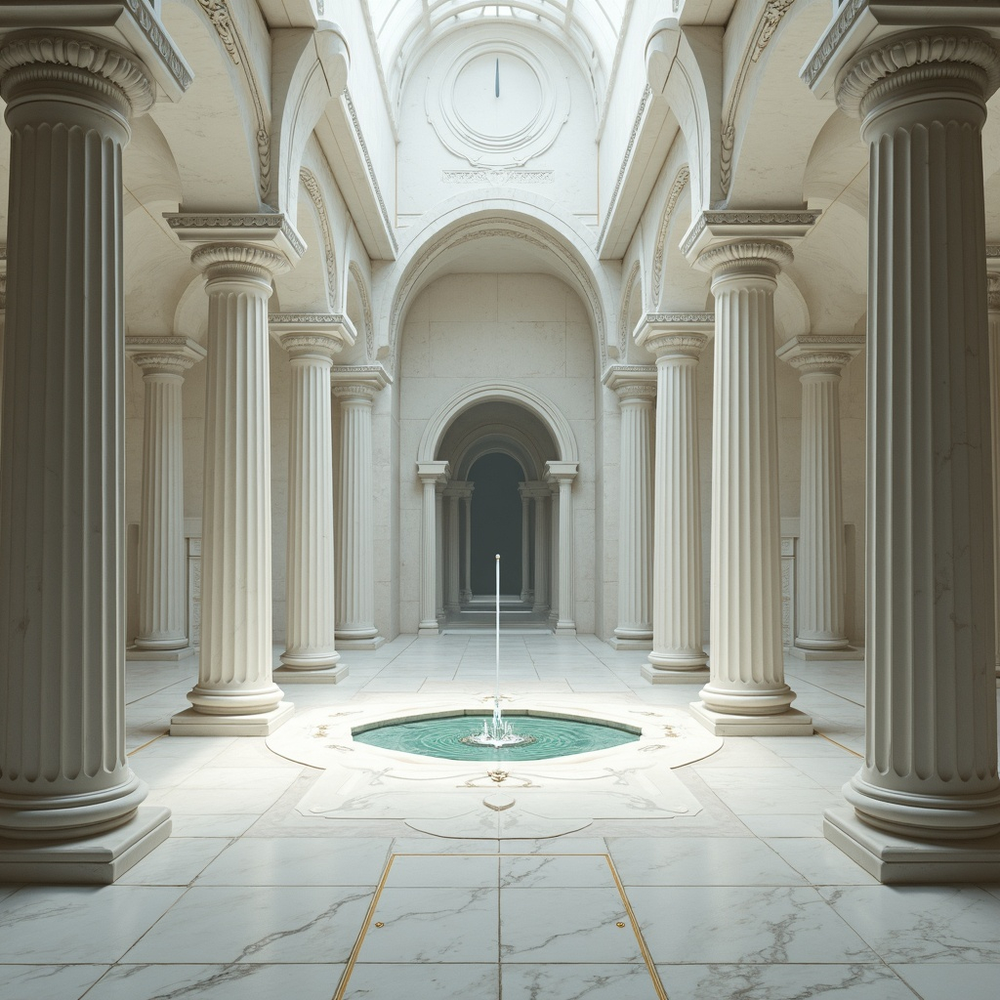
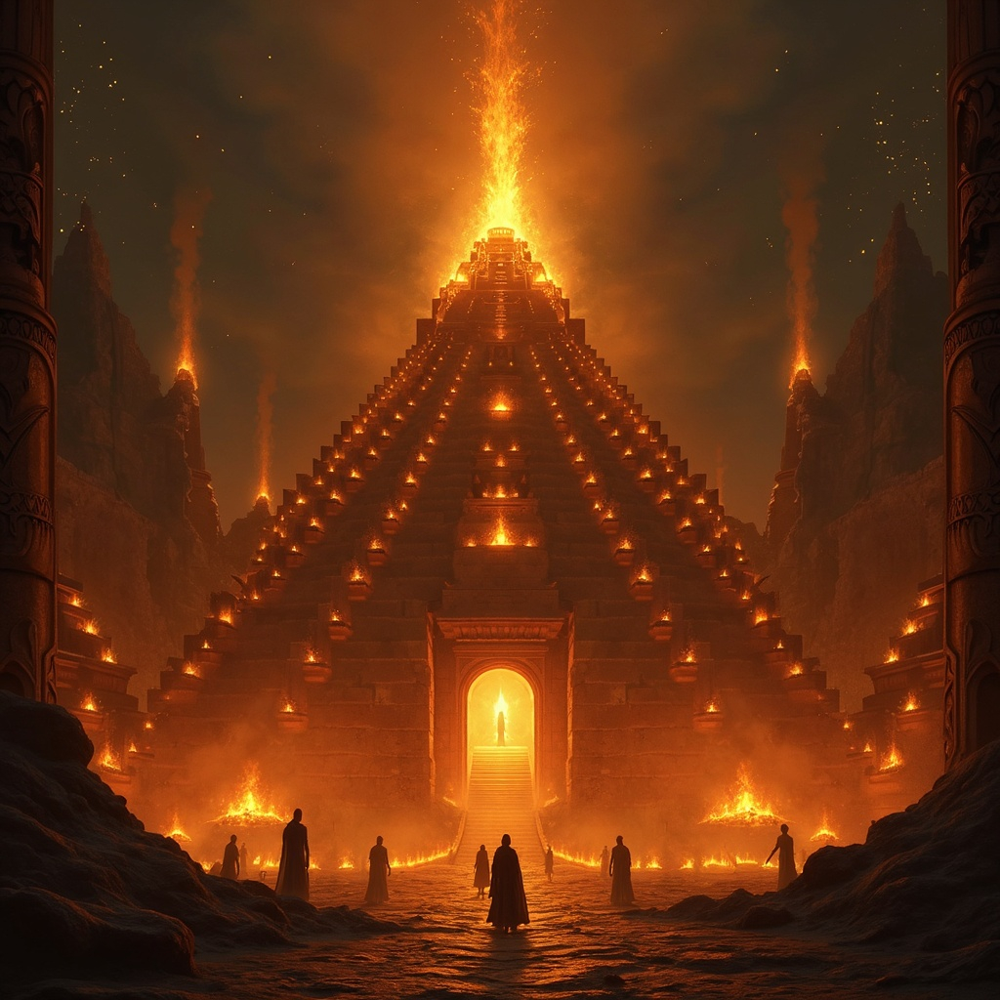
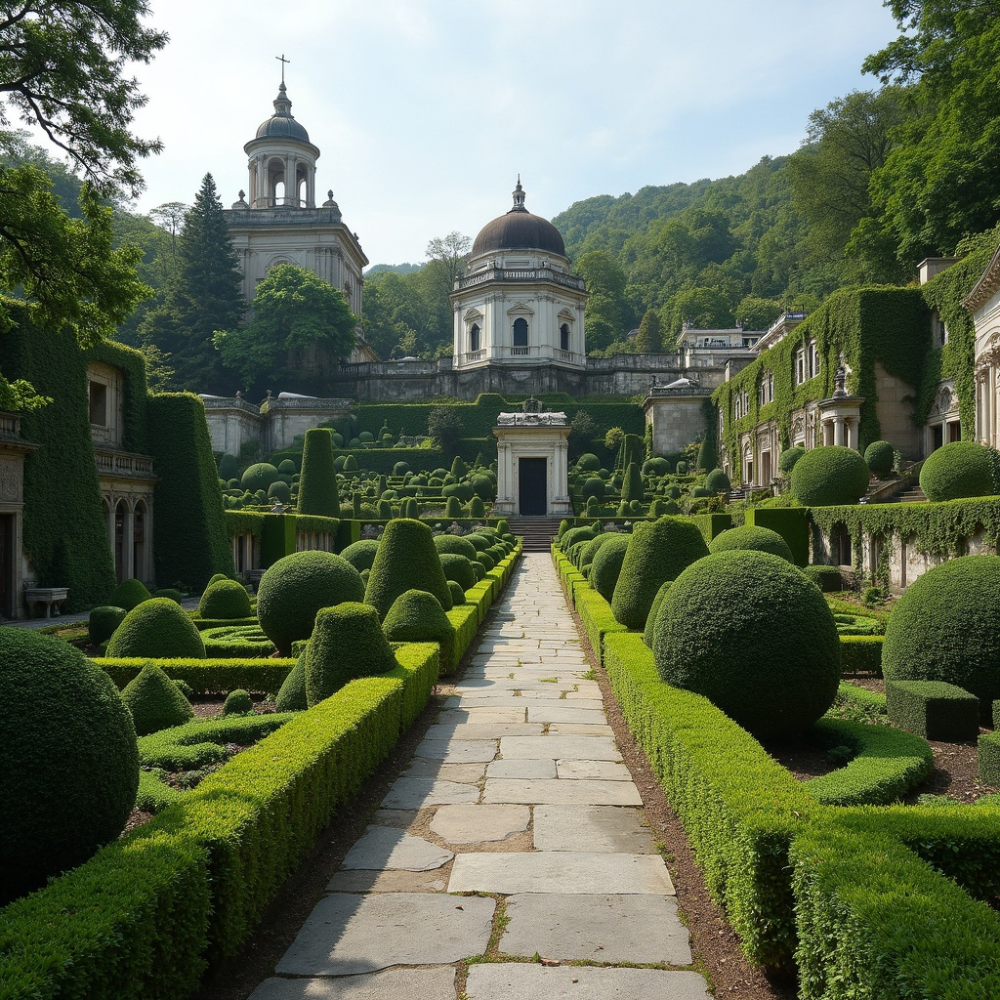
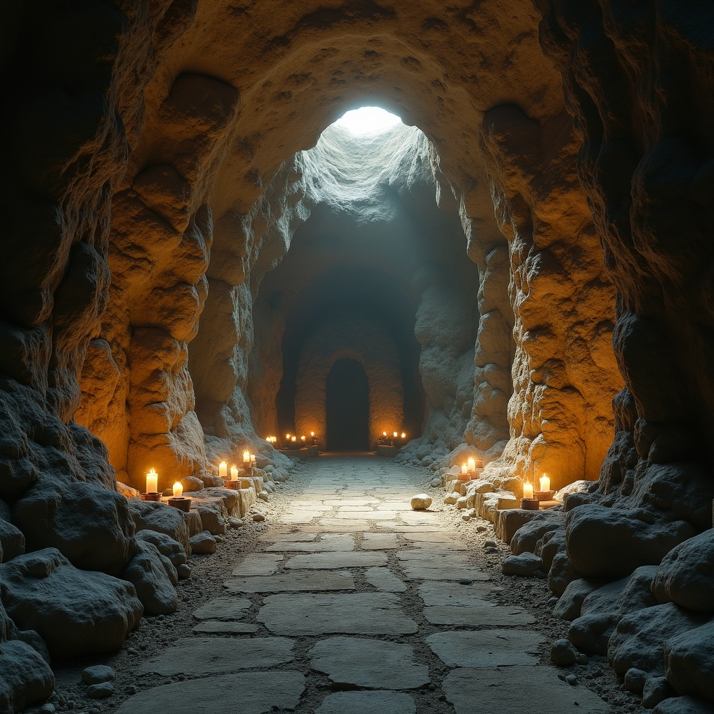
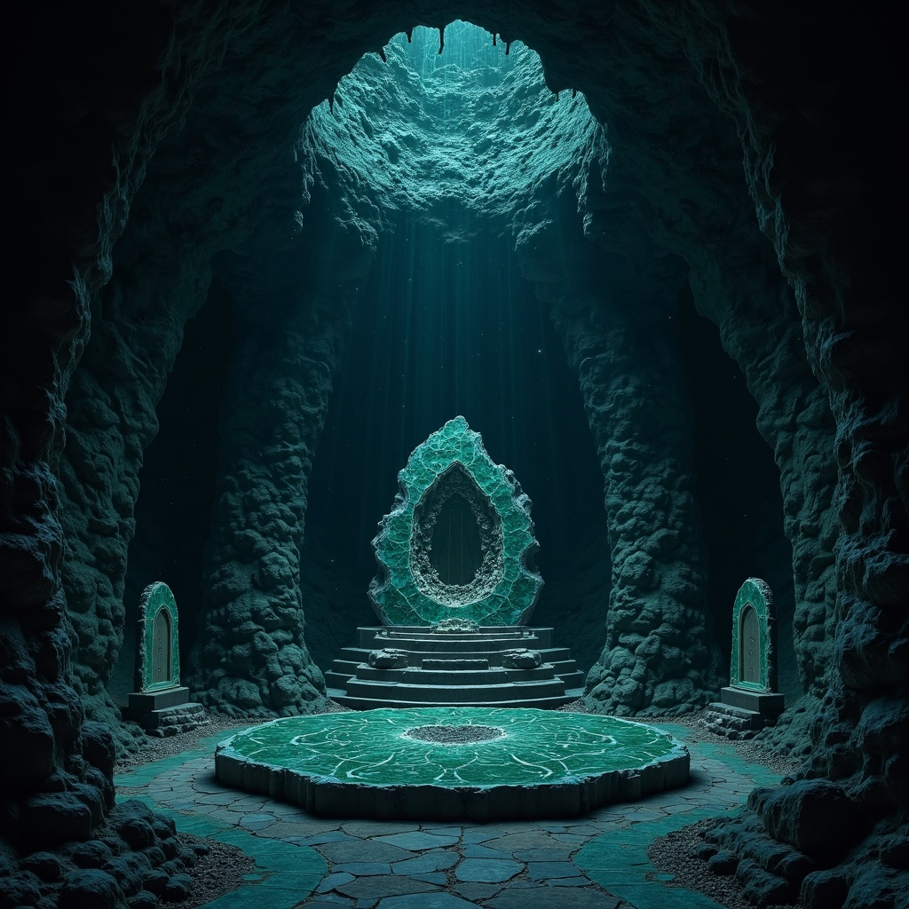
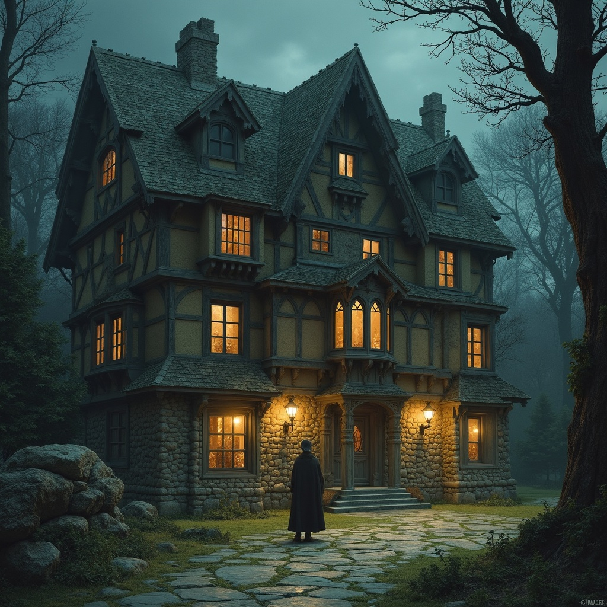
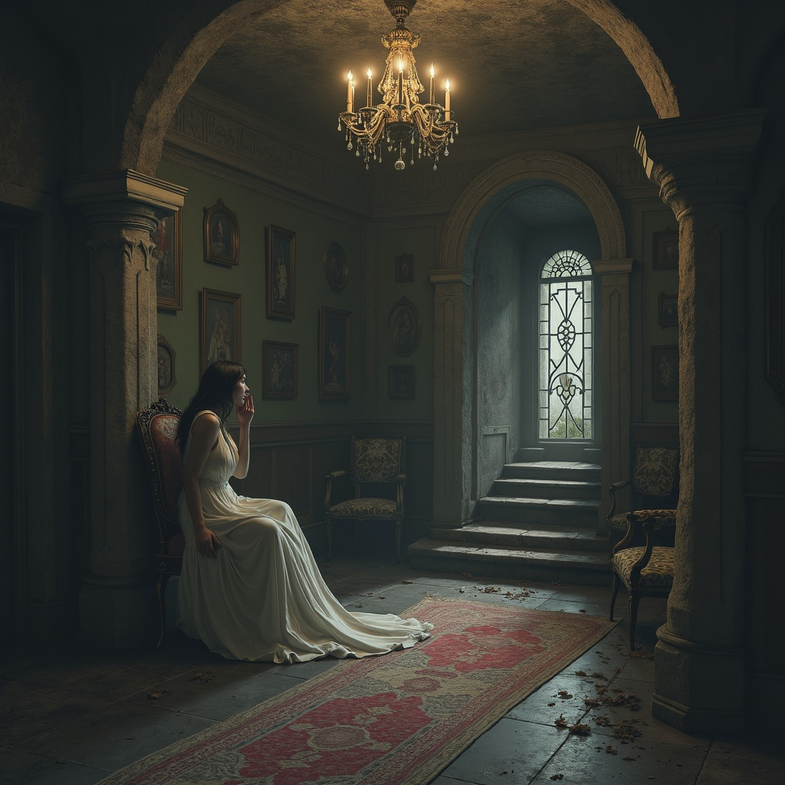
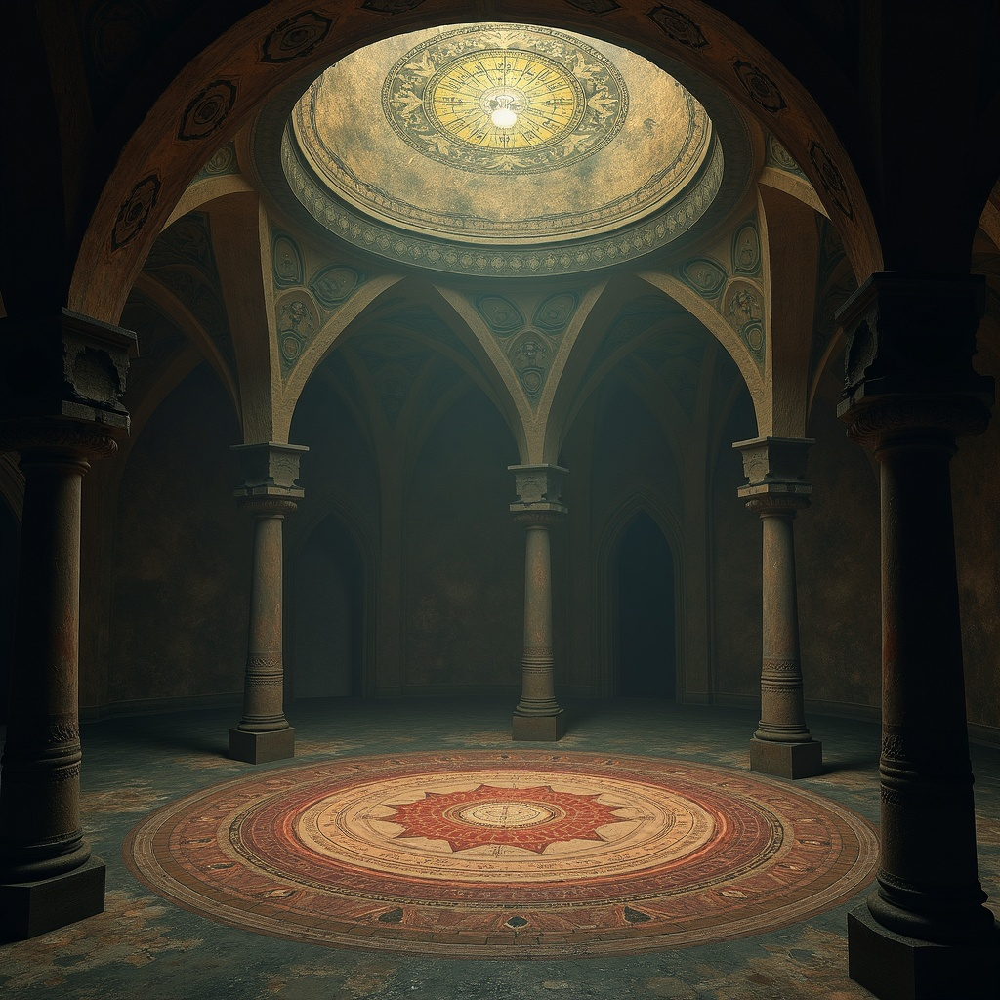
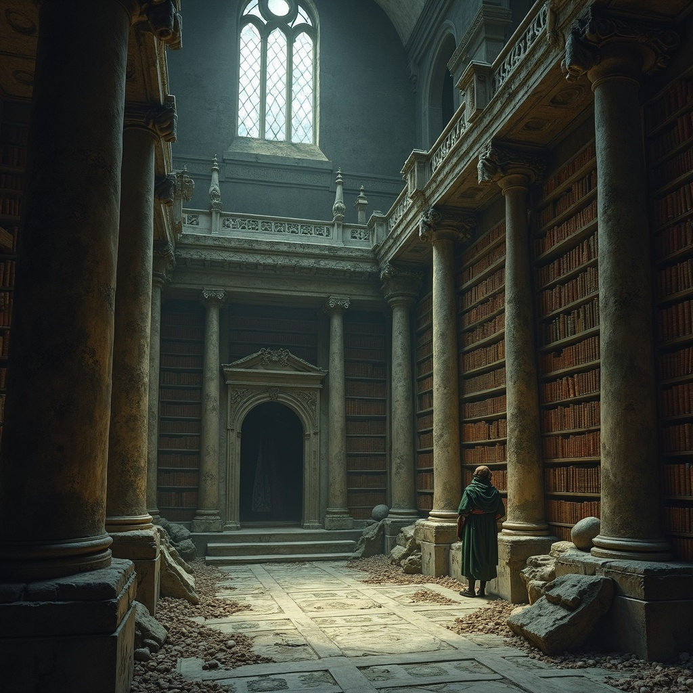
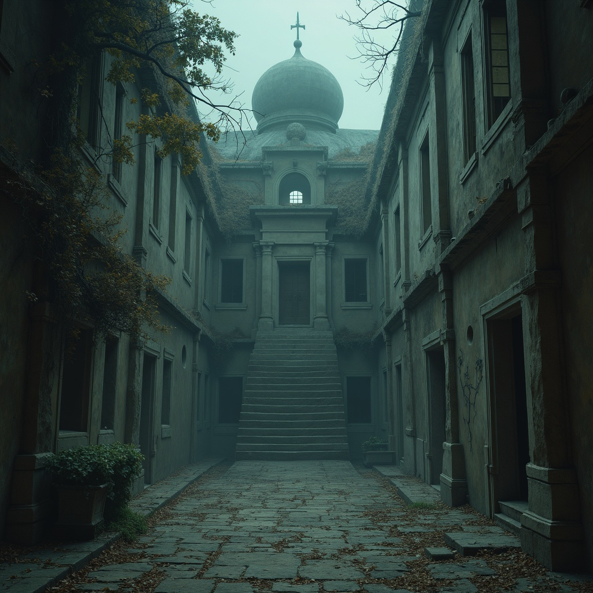

The Necropolis in the Mist—where the dead outnumber the living
Overview
Dargav rises from the mist-shrouded valley like a city built for the dead alone, its stone crypts
climbing the hillside in terraced rows that mirror the homes of the living. Here, where the sacred
valley is surrounded by the Blightmire, the boundary between life and death grows thin, and the departed
hold court in halls built to outlast empires.
For seven centuries, the dead have been the sole citizens of this place, interred in family crypts with
their weapons, jewellery, and the clothes they wore in life. The stone houses rise in step-like fashion,
each with a single dark window facing the valley, as if the dead maintain an eternal vigil over the
world they left behind.
Pilgrims and mourners arrive at Dargav bearing urns of ash, locks of hair, or personal effects of the
deceased they wish to honor. The necropolis serves as a waystation between the living world and whatever
lies beyond, where the bereaved can speak with shadows and receive answers from echoes. Visitors must
first undergo the Ritual of Descent at the ancient jetty where boats cross the river—removing their
shoes, washing their hands in blessed water, and speaking aloud the name of the person that has brought
them here.
The living are permitted to walk among the crypts only during daylight hours, when the dead rest deepest.
As shadows lengthen, visitors must retreat to the Guest House of Sorrows, a modest inn built at the
necropolis's edge where meals are served in silence and no mirrors hang upon the walls. Those who
violate the sunset curfew report experiencing the Fear of the Dead—a bone-deep terror that drives them
mad or catatonic, though some claim to have learned profound truths about mortality from their ordeal.
Districts & Custodians
Terraced Crypts — stacked stone houses for the dead; family vaults and
ossuaries
Jetty Quarter — arrival point for pilgrims and ferries across the mists
Keepers of the Dead — quiet custodians of rites and records
Rites & Laws
Offerings and vigil fires set beneath the terraces; names recited at dusk.
Funerary law forbids plunder; relics remain with the honored dead.
No blood may be spilled here.
“Ash speaks where tongues fail. Walk softly.”
— Jetty warden to a first-time pilgrim
Trade & Taboos
Limited provisioning for pilgrims (oil, candles, shrouds, stonecraft).
No trade in grave goods; custodians enforce sanctity of vaults.
Guided passage through mire paths by licensed wardens.
Rumours & Hooks
Mist-wraiths seen along the Blightmire edge after moonset.
A sealed terrace door weeps fresh candle-soot by dawn.
An urn from a lost dynasty surfaces at the jetty—no one claims it.
Places of Note

Temple of Repose
The sacred antechamber where the newly dead await their final rites, this white marble temple houses
preparation chambers dedicated to different gods and their burial customs. The temple's priests possess
ancient knowledge of every death-ritual known to mortals, ensuring each soul departs according to their
faith's demands. The temple's central fountain flows with blessed waters that prevent decay, allowing
families time to gather for proper farewells.

The Fire Temple
The great crematorium temple rises like a stepped pyramid crowned with eternal flames that burn without
fuel or tending. Within its furnace halls, the Sacred Pyres burn day and night. The Flamekeepers, robed
in cloth that grants immunity to fire, tend each pyre with ritualistic precision, chanting the soul's
name until the last bone turns to ash. The smoke rises through carved chimney-towers that spiral toward
the heavens, carrying prayers and final messages to the gods above.
Temple of Memories
This vast marble hall houses thousands of memorial plaques arranged in concentric circles around the Hall
of Records—a circular chamber where scribes maintain the complete genealogies and deeds of every soul
who has passed through Dargav. The plaques themselves are works of art, glowing faintly when touched by
those who shared blood or love with the deceased. The Hall of Records contains not just names and dates,
but detailed accounts of each person's life, fears, loves, and final words, creating the most
comprehensive library of mortality ever assembled.

Private Crematorium
Reserved for nobility and wealthy merchants, this terraced garden cemetery overlooks the valley with
elaborate mausoleums that rival palaces in their grandeur. Each tomb is a masterwork of architecture.
The groundskeepers are master artisans who maintain elaborate topiary gardens shaped like the heraldic
beasts of each buried family, and the pathways are paved with stones that record the footsteps of
visitors, allowing the dead to know who remembers them.

The Bone Pits
Deep beneath Dargav lies an ancient cave system where those without coin for proper burial are laid to
rest in natural chambers carved by underground rivers. The caves stretch for miles through the
mountain's heart; their walls lined with alcoves holding countless remains. Here, the poor achieve a
democracy in death impossible in life—their bones eventually mixing together in great calcium pools
where individual identity dissolves into collective memory. The cave-spirits that dwell here are ancient
beyond measure, and some claim they can answer questions about the very first humans to die in this
valley.

The Black Chapel
Built from obsidian quarried from the Underworld, this chapel serves as the ceremonial heart of Dargav
where the most sacred death-rites are performed. Its interior is lit only by phosphorescent fungi that
grow in patterns resembling constellations, and its altar is carved from a single massive geode filled
with crystals that resonate with the voices of the dead. Here, the Keeper of Souls performs the Rite of
Final Passage for those souls who cannot rest, and the Chapel's acoustics are designed so that every
whisper echoes thirteen times—once for each traditional stage of death's journey.

The House of Whispers
This sprawling inn provides lodging for mourners, pilgrims, and scholars who come to study death's
mysteries. The innkeeper, always chosen from among those who have briefly died and returned to life,
maintains strict rules about noise and conduct—for the inn serves both living guests and spectral
visitors who require their own accommodations in the ethereal rooms that exist between the physical
spaces.

House of the She-devil
Even in the city of the dead, the living have needs, and this establishment serves those whose grief
manifests as hunger for human connection. The courtesans here practice the ancient art of consolation,
skilled not just in physical pleasure but in the emotional healing of those bereaved. The house is run
by the Priestess of the Wolf, who ensures her charges are trained in psychology and theology as well as
more carnal arts. Many visitors find that the house offers them the first peaceful sleep they've known
since their loss, for here grief is understood as a natural part of life rather than a burden to be
hidden.

Hall of Spirits
The most mystically charged location in Dargav, this circular hall is built at the exact center of the
necropolis where the barriers between worlds are thinnest. Séances and spirit-calling rituals take place
here under the guidance of mediums who have trained for decades to safely contact the dead. The hall's
floor is inscribed with protective circles and summoning arrays in dozens of different magical
traditions, while its domed ceiling displays a map of the afterlife realms that shifts and changes as
new territories of death are discovered and explored by departed souls.

College of Necromancy
The most mystically charged location in Dargav, this circular hall is built at the exact center of the
necropolis where the barriers between worlds are thinnest. Séances and spirit-calling rituals take place
here under the guidance of mediums who have trained for decades to safely contact the dead. The hall's
floor is inscribed with protective circles and summoning arrays in dozens of different magical
traditions, while its domed ceiling displays a map of the afterlife realms that shifts and changes as
new territories of death are discovered and explored by departed souls.

Hospital for the Reborn
The most mysterious institution in Dargav, this hospital treats those who have died and returned—whether
through resurrection magic, divine intervention, or sheer stubborn will. The Reborn often suffer from
unique maladies: memories that belong to other deceased persons, partial transparency, ability to see
and hear spirits constantly, or gradual fading back toward death. The hospital's physicians specialize
in anchoring souls to bodies that have already begun their journey toward the afterlife, using
treatments that blend medicine, magic, and theology in equal measure.